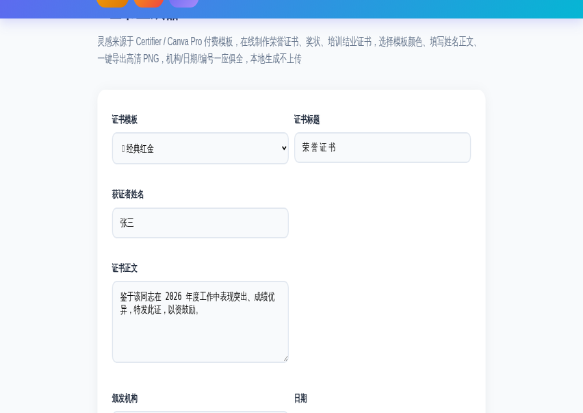
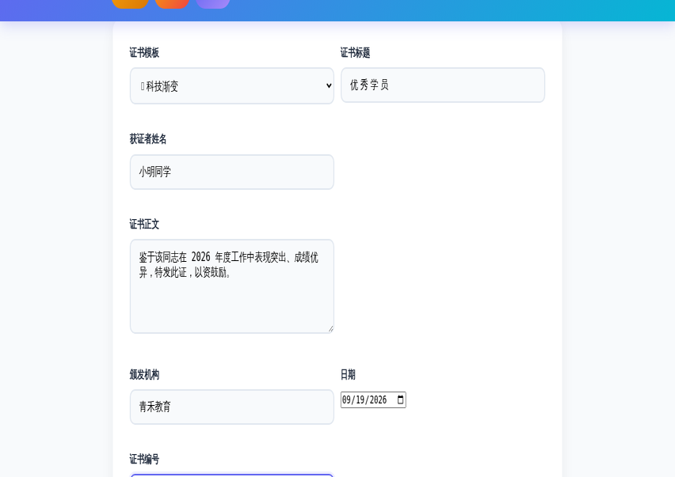
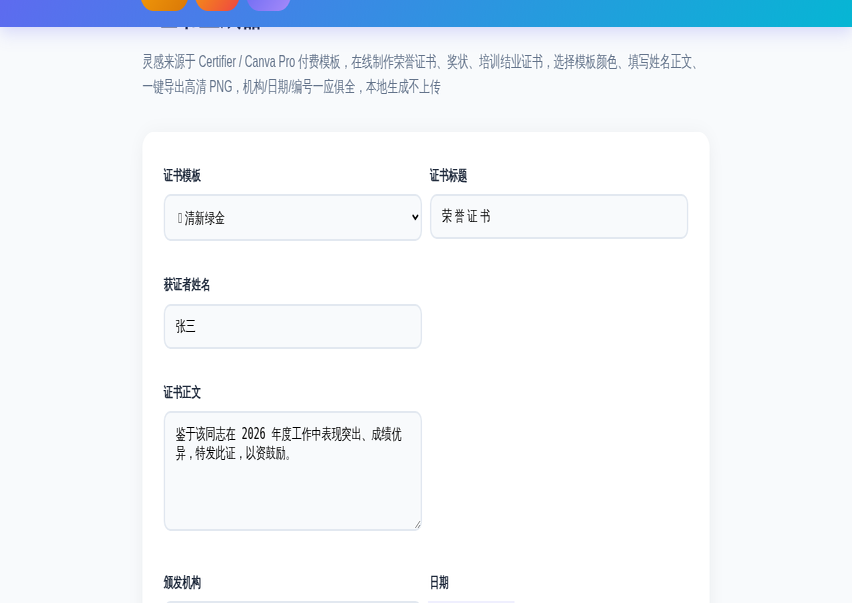

要给学员发一张结业证书，活动结束想颁个奖状，或者公司内部表彰需要一张正式的荣誉证书——找设计公司做要等，用 Word 排版又总是歪歪扭扭。
在线证书生成器 就是解决这个问题的：选好模板、填上姓名和正文、一键导出高清 PNG。内置 4 种模板（经典红金、简约蓝金、清新绿金、科技渐变），标题、获证者姓名、正文、颁发机构、日期、证书编号全部可自定义，全程在浏览器本地生成，不需要任何设计基础。
而且完全免费，不需要注册，证书内容不会上传到任何服务器。
进入 ToolBox 首页，点击「文档转换」分类，找到「证书生成器」工具卡片；或者点击下方按钮快速进入。
工具默认给你一份「经典红金」模板的示例证书（标题：荣誉证书 / 获证者：张三），所有字段都可以直接修改，证书画布会实时刷新。

先选择适合场景的模板：
| 模板 | 风格 | 适用场景 |
|---|---|---|
| 🎖️ 经典红金 | 红底金边，庄重大气 | 官方荣誉证书、年度评优 |
| 💠 简约蓝金 | 蓝白搭配，商务专业 | 培训结业、商务认证 |
| 🌿 清新绿金 | 绿金配色，清新活力 | 校园活动、夏令营、亲子奖状 |
| 🚀 科技渐变 | 蓝紫渐变，未来感 | 编程/机器人/科技类赛事 |
然后依次填写：证书标题（如"优秀学员"）、获证者姓名、证书正文、颁发机构、日期、证书编号——每改一个字段，右侧证书都会实时更新。

确认效果满意后，点击「⬇️ 导出 PNG」即可下载高清证书图片；也可以点「🖨️ 打印」直接打印纸质版。生成的 PNG 为证书画布原始分辨率，可直接打印、插入文档、发朋友圈或用于电子档案。

一套模板可以批量改名字反复用——给全班同学生成结业证书、给整个团队做表彰证书，几分钟就能全部搞定。
生成的证书能用在哪些地方？这里列举最常见的几个：
Q：导出的证书图片清晰吗？能打印吗？
导出的是高清 PNG，分辨率按证书画布生成，可直接打印 A4 或插入电子文档，完全满足日常使用。
Q：能批量生成很多人的证书吗？
当前工具一次生成一张。但改名字立即刷新，批量场景（如全班证书）只需逐次改姓名导出即可，一分钟能出十几张。
Q：证书内容会被上传吗？安全吗？
不会。证书在浏览器本地用 Canvas 渲染生成，所有文字内容不上传服务器，适合填写真实姓名、机构等信息。
Q：能加自己的 Logo 或印章吗？
当前版本暂不支持上传 Logo。可以先用「在线制作印章」工具生成一枚印章，再配合图片处理工具把印章叠加到证书图片上。
📌 还没试过？现在就去制作第一张证书吧
🏅 去制作证书 →